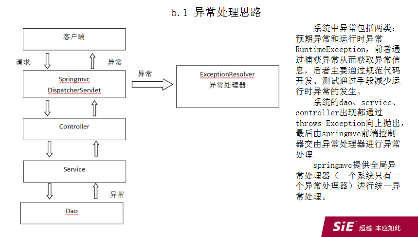

有2种实现:
1、基于HandlerExceptionResolver接口的异常处理。参考：SimpleMappingExceptionResolver，也可以自定义实现HandlerExceptionResolver接口方法resolveException（） --- 全局异常
2、基于@ExceptionHandler的异常处理。 --- 局部异常（参考
CookieController）、全局异常（使用@controllerAdvice-参考
ExceptionController）
相关问题：
1、HandlerExceptionResolver 和 web.xml中配置的error-page会有冲突吗？
web.xml中配置error-page同样是配置出现错误时显示的页面：
<error-page>
<error-code>500</error-code>
<location>/500.jsp</location>
</error-page>
如果resolveException返回了ModelAndView，会优先根据返回值中的页面来显示。不过，resolveException可以返回null，此时则展示web.xml中的error-page的500状态码配置的页面。
当web.xml中有相应的error-page配置，则可以在实现resolveException方法时返回null。
API文档中对返回值的解释：
return
a corresponding ModelAndView to forward to, or null for default
processing.